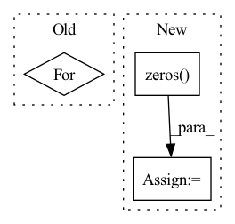

Pattern ID :3011
Before Change
spec = self.mask(spec, m)
df_coefs, df_alpha = self.df_dec(emb, c0)
for _ in range(self.df_iter):
if self.use_alpha:
spec = self.df_op(spec, df_coefs, df_alpha)
else:
spec = self.df_op(spec, df_coefs)After Change
spec = self.pad_spec(spec)
spec = self.df_op(spec, df_coefs)
else:
df_alpha = torch.zeros( ())
return spec, m, lsnr, df_alpha
In pattern: SUPERPATTERN
Frequency: 3
Non-data size: 3
Instances Fragment ID: 16364299
Project Name: rikorose/deepfilternet
Commit Name: a02877c94eb3c65d15ea256da7fb5a5193f6596a
Time: 2022-05-11
Author: h.schroeter@pm.me
File Name: DeepFilterNet/df/deepfilternet2.py
M Class Name: DfNet
N Class Name: DfNet
M Method Name: forward(4)
N Method Name: forward(4)
M Parent Class: nn.Module
N Parent Class: nn.Module
M File Name: DeepFilterNet/df/deepfilternet2.py
N File Name: DeepFilterNet/df/deepfilternet2.py
M Start Line: 488
M End Line: 504
N Start Line: 431
N End Line: 456
Before Change
count = np.arange(x.shape[0]) + 1
self.c_t = torch.zeros_like(self.emb) // shape=(seq_len, batch_size, day_dim)
for i, att_timesteps in enumerate(count):
// 按时间步迭代，计算每个时间步的经attention的gru输出
self.c_t[i] = self.attentionStep(first_h_a, first_h_b, att_timesteps)
if self.drop < 1.0:
self.c_t = self.dropout(self.c_t)After Change
x = self.proj(x)
x = self.dropout(x)
out = torch.zeros( (batch_size, time_steps, self.hidden_dim))
for cur_time in range(time_steps):
cur_x = x[:, : cur_time + 1, :]
out[:, cur_time, :] = self.retain_encoder(cur_x) Fragment ID: 16364301
Project Name: yhzhu99/covid-ehr-benchmarks
Commit Name: b3d4ba85ad8e8cfeb3e45e07e5fadfa3fd4a25fa
Time: 2022-06-25
Author: yhzhu99@gmail.com
File Name: app/models/backbones/retain.py
M Class Name: RETAIN
N Class Name: RETAIN
M Method Name: forward(2)
N Method Name: forward(2)
M Parent Class: nn.Module
N Parent Class: nn.Module
M File Name: app/models/backbones/retain.py
N File Name: app/models/backbones/retain.py
M Start Line: 64
M End Line: 83
N Start Line: 44
N End Line: 53
Before Change
if self.training and self.layer_dropout > 0:
layers_and_args = layer_drop(layers_and_args, self.layer_dropout)
for (f, g), (f_args, g_args) in layers_and_args:
x = x + f(x, **f_args)
x = x + g(x, **g_args)
return x
After Change
if self.training and self.layer_dropout > 0:
layers_and_args = layer_drop(layers_and_args, self.layer_dropout)
aux_loss = torch.zeros( 1, device=x.device, dtype=x.dtype)
for (f, g), (f_args, g_args) in layers_and_args:
res, loss = cast_return(f(x, **f_args))
aux_loss += loss
x = x + res
res, loss = cast_return(g(x, **g_args)) Fragment ID: 16364303
Project Name: lucidrains/routing-transformer
Commit Name: 7066f4fb2505744791a8113dde847e2ff6a3f18a
Time: 2020-05-25
Author: lucidrains@gmail.com
File Name: routing_transformer/reversible.py
M Class Name: SequentialSequence
N Class Name: SequentialSequence
M Method Name: forward(2)
N Method Name: forward(2)
M Parent Class: nn.Module
N Parent Class: nn.Module
M File Name: routing_transformer/reversible.py
N File Name: routing_transformer/reversible.py
M Start Line: 143
M End Line: 151
N Start Line: 159
N End Line: 174